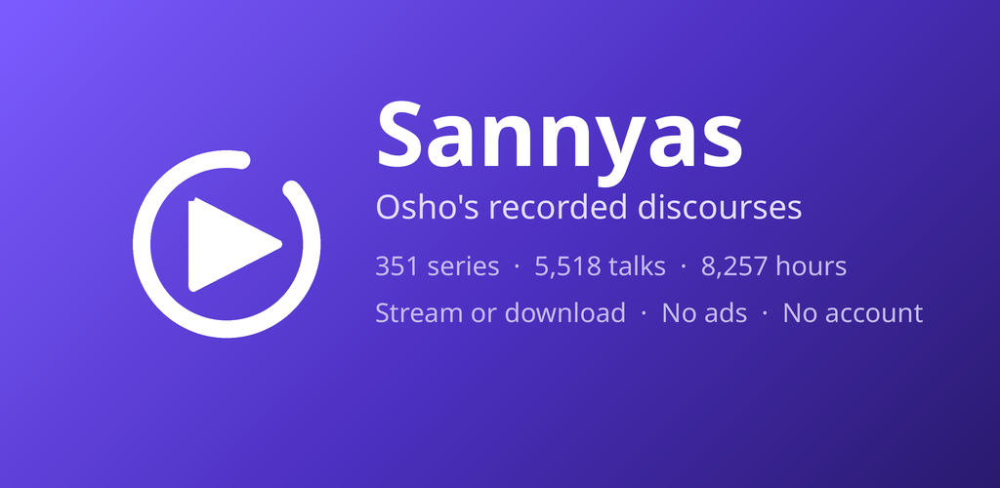
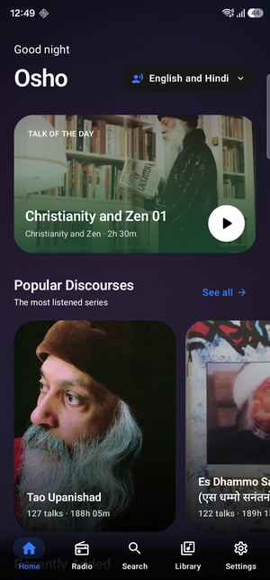
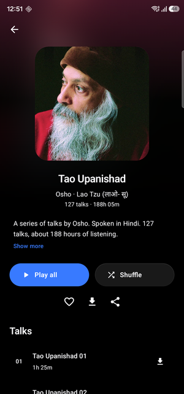
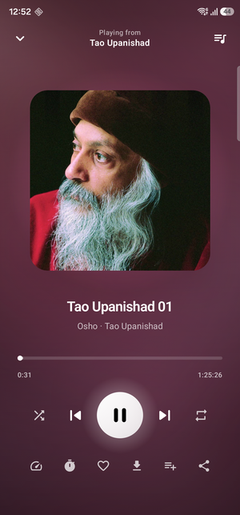
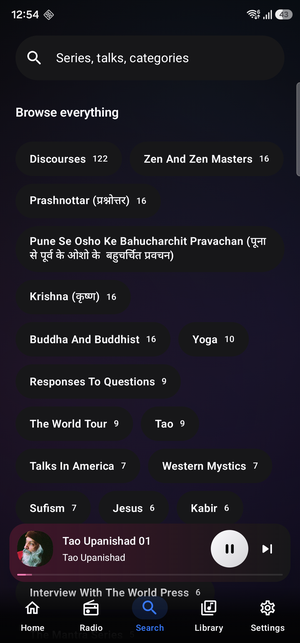

Free. Offline. In Hindi and English.
No account, no ads, no tracking.
Free APK · 4.4 MB · Android 7.0 and up
Sannyas is a free Android audio player built for one thing: listening to Osho's recorded discourses without anything getting in the way. There is no sign-up, no subscription, no advertising, and no tracking of any kind.
The full catalogue of Osho pravachan — 351 series across Zen, Buddha, Krishna, Sufism, Tao, Kabir, Yoga and 48 other categories — is browsable the moment you open the app. Talks run over an hour each, so it is built around the things that actually matter at that length: a sleep timer, playback speed, resume where you left off, and offline downloads.




Download any talk or a whole series. Downloads keep going in the background and survive a reboot.
176 Hindi series and 175 English series. Switch the browsing language whenever you like.
Set a duration, or let it stop at the end of the current talk. Made for listening at night.
Keeps playing with the screen off, with lock-screen and notification controls.
Every talk remembers its position, across restarts.
Browse and play the whole catalogue from the car screen, or ask your assistant.
Adjust playback speed and skip long pauses — useful across 8,000 hours of talks.
Save talks, build playlists, set bookmarks, and see your listening history.
सन्न्यास एक निःशुल्क एंड्रॉइड ऐप है, जिसमें ओशो के रिकॉर्ड किए गए प्रवचन हिन्दी और अंग्रेज़ी दोनों में सुने जा सकते हैं। 176 हिन्दी शृंखलाएँ — ताओ उपनिषद, कृष्ण, प्रश्नोत्तर, एस धम्मो सनंतनो और कई अन्य।
कोई खाता नहीं, कोई विज्ञापन नहीं, कोई शुल्क नहीं। प्रवचन डाउनलोड करके बिना इंटरनेट के भी सुने जा सकते हैं। स्लीप टाइमर, प्लेबैक स्पीड और जहाँ छोड़ा था वहीं से सुनना — सब उपलब्ध है।
Download sannyas-1.0.0.apk from the latest release and open it on your phone. Android will ask you to allow installs from whichever app you opened it with — that is the normal one-time prompt for installing outside the Play Store. Requires Android 7.0 or newer.
Yes — no ads, no subscription, no in-app purchases, and no paid tier.
Yes. Download individual talks or entire series and they play with no connection at all.
Yes — 176 Hindi series alongside 175 English ones, switchable at any time from Settings.
No. There is no sign-up and no login. The app has no server of its own and collects nothing about you.
Streamed directly from oshoworld.com, where it is offered freely. The app does not rehost it.
Not yet. For now it installs directly from the APK linked above.
Nothing is collected. No server, no account, no analytics, no advertising code. Favourites, history and settings stay on your device and are gone when you uninstall. Read the full privacy policy.